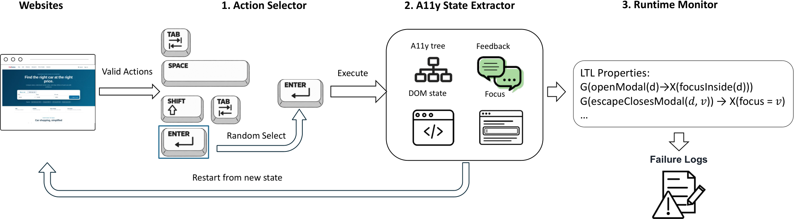

Abstract
Web accessibility failures often emerge during interaction: a dialog opens without receiving focus, a keyboard user becomes trapped in an editor, or closing a dialog loses the user's place. A11yLTLNav detects these navigation failures by checking whether interface behavior follows explicit accessibility expectations. We synthesize failures documented in prior studies with blind and low-vision users, express browser-observable expectations as temporal properties, and check them while exploring different keyboard interaction sequences. Each report connects an action to its resulting state and the expectation that was violated. Across 31 generated website environments, A11yLTLNav reports 309 navigation failures, of which 274 are confirmed correct (88.7% precision), without language-model inference during testing.
How it works


View full-size figure
Think of a test that tries using a website with a keyboard and checks what happens after each action.
- Define the expected behavior. Start with rules grounded in prior accessibility studies. For example, opening a dialog should move keyboard focus inside it; closing it should restore focus to the invoking control or an appropriate next location.
- Try different sequences of actions. The tester explores available keyboard actions, such as Tab, Enter, and Escape. It varies the sequence instead of replaying just one fixed path, so it can encounter different interface states.
- Report the sequence that breaks a rule. When the observed behavior violates an expectation, the checker records the interaction and the relevant states so the failure can be inspected.
The sequence matters. Checking the dialog's label alone does not tell us where focus goes after it opens. The failure becomes clear when we connect the action with the state that follows.
One interaction rule, written precisely
Whenever a dialog opens, keyboard focus should move inside it in the next relevant state.
G means “every time”; X means “in the next checked state”; d is the dialog. The checker observes the relevant state after the interaction settles. This is the focus-entry rule from the paper.
Technical details: LTL and random testing
Linear Temporal Logic (LTL) is a way to write rules about how behavior unfolds over time. Here, it makes expectations such as “after this action, that state should follow” precise enough for a program to check.
Random testing means trying varied sequences of available keyboard actions to find a sequence that violates a rule. The action choices vary; the rules used to judge the resulting behavior stay fixed. This can uncover unexpected paths, but it does not guarantee that every failure will be found.
A11yLTLNav builds on Bombadil and evaluates executable temporal properties over action–state traces. See the formalization and implementation in the paper.
Examples
Watch the checker find a broken interaction
The checker explores keyboard actions on a generated news website. In this run, opening a video player leaves focus behind the dialog. Later, pressing Escape fails to close it. The buttons below play the short sequences where these failures become visible.
Key moments: 00:03 — focus stays outside the player; 01:47 — Escape leaves the dialog open.
Full 30-minute replay · Annotated evidence and checker output
Finishing a task can still leave navigation broken
In the news-site example, a keyboard-only agent finishes an email task and reports success. Yet opening the dialog leaves focus outside it, and closing it fails to restore the original focus. Completing the task alone does not establish that the interaction was accessible.
View the four annotated states and their text descriptions.
A text editor that will not let the keyboard move on
In a generated audio editor, pressing Tab inserts spaces instead of moving to the next control. Focus stays in the same text area. The recorded interaction and the site's key handler reveal why the usual exit keys do not release focus.
Open interactive keyboard-trap demo →
Use Next in the demo to step through the explanation. This is an interactive walkthrough combining a recorded Tab press with source-code analysis of the exit keys.
Evaluation
We evaluated A11yLTLNav on 31 locally hosted, generated website environments based on real websites and tasks. Of its 309 reported failures, 274 were confirmed correct, giving 88.7% precision.
| Checker | Precision |
|---|---|
| Adapted agentic checker (TaskAudit) | 57.2% |
| A11yLTLNav | 88.7% |
In other words, about 89 out of every 100 reported failures were confirmed correct. This measures the reliability of the reports, not the percentage of all failures that the checker can find.
Precision ranged from 85.9% to 88.7% across three independent runs. Testing required no language-model inference. Read the full evaluation.
Scope. Detection depends on which paths are explored and what the browser exposes. These checks complement static accessibility tools and studies with screen-reader users.